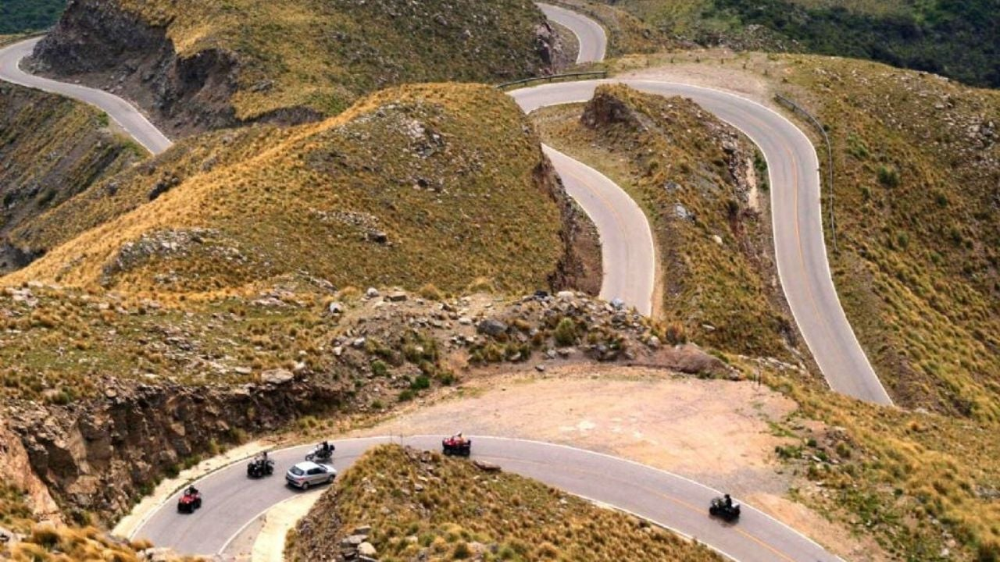
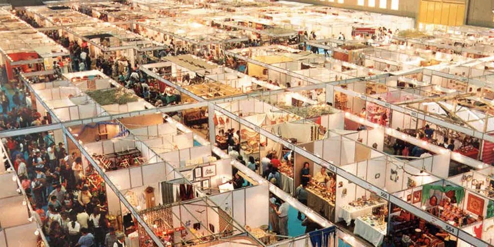

Villa Carlos Paz
Principal centro turístico de las sierras, ubicada a orillas del lago San Roque. Ofrece paseos en el famoso Reloj Cucú, teleférico al Cerro de la Cruz, casino y vibrante vida nocturna.
Descubrí la magia de las sierras cordobesas con un paquete especial de 5 días y 4 noches.
Desde $720 USD por persona.
¡Reservar ahora!Principal centro turístico de las sierras, ubicada a orillas del lago San Roque. Ofrece paseos en el famoso Reloj Cucú, teleférico al Cerro de la Cruz, casino y vibrante vida nocturna.

Ruta escénica que atraviesa las Sierras Grandes, con miradores espectaculares como el Balcón del Norte y acceso al Parque Nacional Quebrada del Condorito para avistar cóndores.
Fundada en 1573 por Jerónimo Luis de Cabrera, Córdoba se convirtió en un importante centro cultural y religioso durante la colonia, albergando la primera universidad del país (1613). Conocida como "La Docta", fue cuna de la Reforma Universitaria de 1918. Su desarrollo turístico comenzó en el siglo XX con el auge de las villas serranas. Hoy combina patrimonio jesuita con modernidad, siendo la segunda ciudad más poblada de Argentina.

La muestra artesanal más importante de Latinoamérica, con más de 600 expositores de 40 países. Se realiza en el complejo Feriar Córdoba con espectáculos musicales, talleres y gastronomía típica.
Clima templado con estación seca, variando según la altitud en las sierras.
| Estación | Temperatura promedio | Clima |
|---|---|---|
| Verano | 18-31°C | Cálido con lluvias ocasionales |
| Otoño | 12-24°C | Templado y seco |
| Invierno | 5-18°C | Fresco con noches frías |
| Primavera | 15-28°C | Agradable con floración |